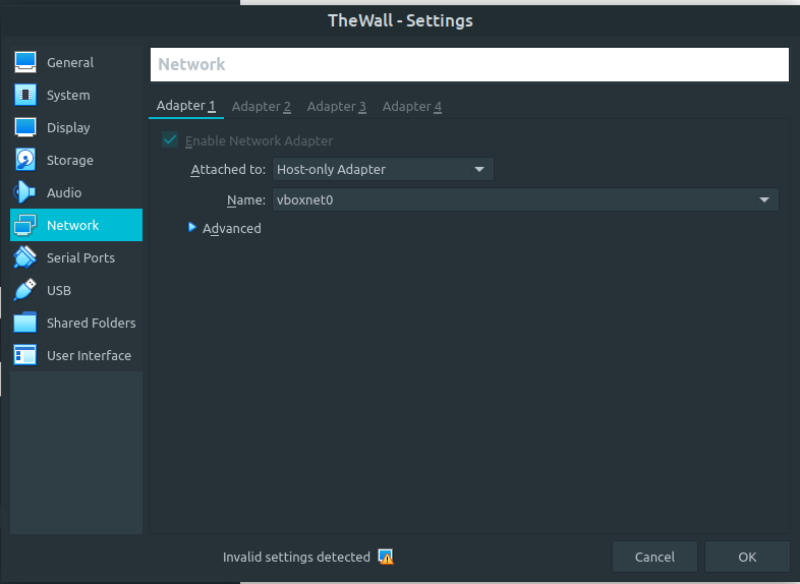
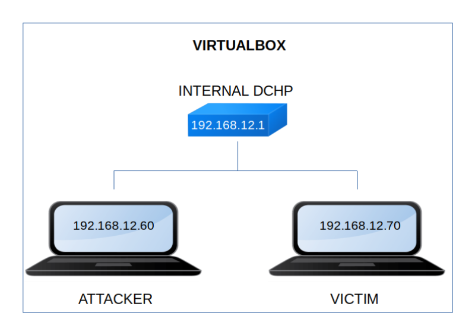

TheWall
▸ TheWall
▸ 2. Finding Services and Ports
▸ 4.1.2 Bash reverse shell (First flag)
▸ 5.2 GTFOBins about "exiftool"
▸ 5.3 Search files belonging to user's group
Difficulty: Beginner.
Flag: 2 flags.
Learning:
• Reconnaissance
Scan Network
Find services
• Enumerate
Gobuster
Fuzzing
• Exploitation
Log poisoning
Remote Code Execution
Bash Reverse Shell
• Privilege Escalation
See sudoers
GTFObins about “exiftool”
Search file belonging to group
Scan files with capabilities
Connect via SSH without password
• Download (Mirror): https://downloads.hackmyvm.eu/thewall.zip
Install the machine on VirtualBox:
1. Download the file and extract it.
2. On Virtualbox choose File->Import Appliance.
3. Select the file “ova”.
4. Accept to import.


Watch your Machine IP.
$ ifconfigOutput:

Diagram
